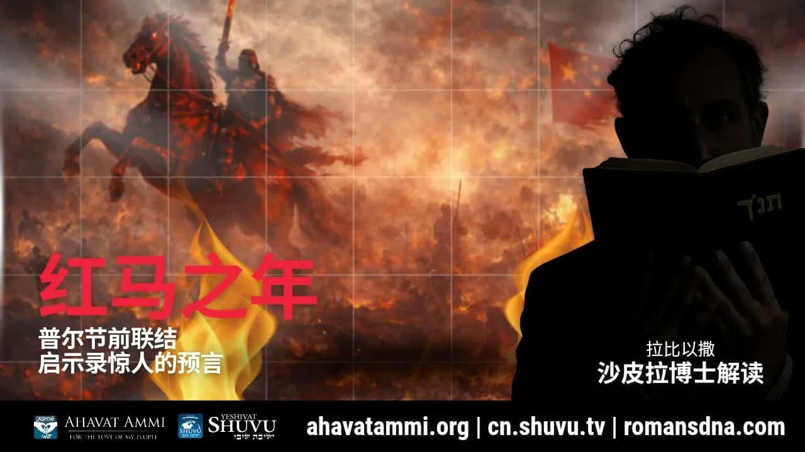

红马之年：中国、波斯与彌赛亚的普珥节预言 The Year of the Red Horse: China, Persia, and the Messiah's Purim Prophecy
拉比沙皮拉博士将启示录第六章的红马与中国的农历「红马之年」对齐，再以撒迦利亚书一章八节的 Ra'iti (ראיתי)、Hadas (הדס)、Shushan (שושן) 三个希伯来词，把以斯帖记、但以理书与末日决战连成一条线。 Rabbi Dr. Shapira aligns the Red Horse of Revelation 6 with the Lunar New Year's “Year of the Red Horse,” then uses three Hebrew words in Zechariah 1:8 — Ra'iti (ראיתי), Hadas (הדס), and Shushan (שושן) — to draw a single line from Esther to Daniel to the final battle against Persia.
几个星期没有发布预言性视频之后——「并不是因为我无话可说，而是因为我在等待主赐下清晰的指示和明确的记号」——拉比沙皮拉博士从他刚刚结束的中国行程归来，宣布他所等的记号已经到了。就在你观看这个视频的此刻，中国正在进入为期一整週的农历庆祝，迎来的这一年——叫「红马之年」。他没有把这当成文化趣闻；他把它放在《启示录》第六章的红马、撒迦利亚书第一章的红马、塔木德 Berakhot 56b 关于「梦见红马奔跑」的拉比释经、以及但以理书中波斯王子与米迦勒的天上之争——这四条线的汇合点上。他的结论是：一场与波斯（伊朗）的决战已在门口；红马预言已经解码。 After weeks without a prophetic video — “not because I had nothing to say, but because I was waiting for the Lord to give me a clear instruction and a clear sign” — Rabbi Dr. Shapira returns from a trip into China and announces that the sign he was waiting for has arrived. At this very moment, as you watch this video, China is entering its week-long Lunar New Year — the Year of the Red Horse. He does not treat this as cultural trivia. He places it at the convergence of four lines: the Red Horse of Revelation 6, the man on the red horse in Zechariah 1, the rabbinic reading of horses-in-dreams in Talmud Berakhot 56b, and the heavenly war between the Prince of Persia and Michael in Daniel. His conclusion: a final reckoning with Persia (Iran) is at the door — the Red Horse prophecy has been decoded.
一、等候记号的几个星期I. The Weeks of Waiting for a Sign
拉比开门见山地说，他过去几週没有发布预言性视频不是因为没有话可说，而是因为他在等候主清楚的指示。在中国境内的最后几天，主对他说话——「是时候释放这个信息了」。所以他在刚回到居住地、刚踏入普珥节週期的当下，立刻录这段视频。 Rabbi Shapira opens by explaining that the silence of recent weeks was not for lack of material — it was a deliberate wait for a clear word from the Lord. In the final days of his trip inside China, the Lord spoke to him: “it is time to release this message.” He records the video the moment he returns home, on the eve of Purim.
「在过去的几週裡，我没有向你们发布任何先知性的视频。并不是因为我无话要说，而是因为我在等待主赐下清晰的指示和明确的记号。」——沙皮拉拉比博士 “In recent weeks I have not released any prophetic videos. Not because I had nothing to say, but because I was waiting for the Lord to give me a clear instruction and a clear sign.”— Rabbi Dr. Itzhak Shapira
他要谈的，是《启示录》第六章——羔羊揭开第二印的时候，从地上奔出的那匹红马。他要问的是两个问题：「骑在马上的到底是在说谁？而红马的季节又究竟是指什麼时候？」 His subject: Revelation 6, and the red horse that rides out when the Lamb opens the second seal. His two questions: “Who is the one riding on the horse? And what season exactly is the season of the red horse?”
二、红马之年——一个不可能是巧合的对齐II. The Year of the Red Horse — A Convergence That Cannot Be Coincidence
拉比立刻把这个问题与一件具体的事件对齐：观看视频的此刻，中国正在进入为期一整週的农历庆祝——而这一年的名字，正是「红马之年」。 He immediately lines this question up against a concrete event: at the very moment of viewing, China is entering its week-long Lunar New Year — and the name of the incoming year is precisely “the Year of the Red Horse.”
「中国进入的红马之年，给我们发的预兆——正好出现在中东局势进入新的动向之时，特别是美国与伊朗之间的紧张佈局。这些绝非巧合。实际安排得天衣无缝。」——沙皮拉拉比博士 “The omen sent to us by China's entry into the Year of the Red Horse — appearing precisely as the Middle East enters new developments, especially the tense alignment between the United States and Iran. These are by no means coincidences. The arrangement is seamless.”— Rabbi Dr. Itzhak Shapira
拉比立刻预先回应一个合理的反驳：「中国的十二生肖只是文化传统，不是圣经预言」——他不否认这一点。他的论证并不是「中国生肖等于圣经预言」；而是记号的论证：在同一週之内，神让两件本不相干的事——一個东方民族的纪年与一段西方福音正典里的末世异象——使用同一個意象、同一种颜色、同一种动物。这种「精确的同步」，按希伯来传统的解经直觉，本身就是值得停下来的东西。 He immediately heads off a fair objection — “China's zodiac is just culture, not biblical prophecy” — and he doesn't dispute that. His argument is not “the Chinese zodiac equals biblical prophecy.” It is a sign argument: in the same week, God lets two unrelated things — an Eastern nation's reckoning of years and a Western canonical apocalyptic vision — converge on the same image, the same colour, the same animal. By the rabbinic sensitivity to signs, that precise synchronicity is itself something to stop and consider.
三、塔木德 Berakhot 56b ── 梦中红马奔跑之恐怖III. Talmud Berakhot 56b — A Red Horse Running in a Dream
拉比转向塔木德 Berakhot 56b——犹太传统中关于「梦的解释」的经典文献。中世纪的两位注释家 Malbim（מלבי״ם）与 Radak（רד״ק，拉达克）在此处作出明确的判断： He turns to Talmud Berakhot 56b — the classical Jewish reference on the interpretation of dreams. Two of the great medieval commentators, the Malbim (מלבי״ם) and the Radak (רד״ק), make this judgement explicit:
「马象徵著战争。红马代表战争之日——这是为战争之日预备的马。为什麼它的颜色是鲜艳的红色？因为它为大流血和大屠杀之日染上了鲜血。若人在梦中看见红马行走，也是好兆头；但若看见红马奔跑，则是可怕之事降临的预兆。」——马尔比姆 (Malbim) 与拉达克 (Radak)，引自塔木德 Berakhot 56b “A horse in a dream symbolizes war. A red horse represents the day of war — a horse prepared for the day of war. Why is its colour vivid red? Because it has been stained with blood for the day of great slaughter. If one sees a red horse walking in a dream, it is still a good omen; but if one sees a red horse running, it is the omen of dreadful things to come.”— The Malbim and the Radak, citing Talmud Berakhot 56b
拉比把这条释经搬到 1948 年以来世界历史的轨道上——并且尤其搬到伊朗近年公开的话语上：「如果美国发动攻击，将会爆发一场世界大战，一场区域战争和扩散到全世界的大战。」拉比说：当伊朗自己开口讲到「世界大战」，当中国进入红马之年的那一週，红马已经不只是在「走」，它正在奔跑。 He places this rabbinic reading against the trajectory of world history since 1948 — and especially against Iran's recent public threats: “if the United States attacks, a world war will break out — a regional war that spreads to the whole world.” When Iran itself says the words “world war,” in the very week China enters the Year of the Red Horse — the red horse is no longer walking. It is running.
他又一次小心地标记自己：「我通常不会谈论这类事情，除非我看见清晰的启示。而现在我看见了。」 He marks his own caution: “I usually do not speak about this kind of thing unless I see clarity. And right now I see it.”
四、撒迦利亚书一章八节——「我观看」与桃金娘的奥秘IV. Zechariah 1:8 — “I Saw” and the Mystery of the Myrtle Trees
现在我们打开撒迦利亚书一章八节——也许是希伯来圣经中最直接对应启示录红马的异象：「夜间我观看；看哪，见一人骑著红马，站在挖地翻石榴树（桃金娘）中间。在他身后，还有红色、绿色和白色的马。」 Now open Zechariah 1:8 — perhaps the Hebrew Bible's most direct parallel to Revelation's red horse: “I looked up at night, and there before me was a man riding a red horse. He was standing among the myrtle trees in the ravine. Behind him were red, brown, and white horses.”
拉比挑出三个关键的希伯来词。第一个：Ra'iti（ראיתי，「我观看 / 我看见」）。这个词不是普通的「看见」；按以本以斯拉 (Ibn Ezra) 的解读，撒迦利亚在此看见的是两位天使——其证据是同样的词组出现在创世记十九章里的索多玛叙事：Va'era'iti Ve'el Hashnei Hamalakhim Sodomah（וארא והנה שני המלאכים סדומה，「我看见，两位天使来到了索多玛」）。两位天使夜间来到一座即将被审判的城——拉比说，这正是撒迦利亚所看见的图景的另一面。 He extracts three Hebrew keywords. First: Ra'iti (ראיתי, “I saw / I beheld”). This is no ordinary “seeing.” Following Ibn Ezra's reading, what Zechariah sees are two angels — and the proof is the same phrase from Genesis 19, the Sodom narrative: Va'era'iti Ve'el Hashnei Hamalakhim Sodomah (וארא והנה שני המלאכים סדומה, “and I saw the two angels coming to Sodom”). Two angels arriving by night at a city about to be judged — and that, the rabbi says, is the obverse of the picture Zechariah sees.
第二个：Hadas（הדס，「桃金娘 / 翻石榴树」）。站在桃金娘之间的那位是谁？拉比传统直接告诉我们：桃金娘象徵彌赛亚。这一点在以斯帖记里立刻有第二层证据：以斯帖的希伯来名字 Hadasa（הדסה）正是从 Hadas 派生而来。撒迦利亚的桃金娘 → 以斯帖的Hadasa——这条线不是巧合。 Second: Hadas (הדס, “myrtle tree”). Who is the one standing among the myrtles? The rabbinic tradition states it plainly: the myrtle is a symbol of the Messiah. And here Esther provides immediate corroboration: Esther's Hebrew name Hadasa (הדסה) is derived directly from Hadas. Zechariah's myrtle → Esther's Hadasa — that is not coincidence.
「他被称为站在桃金娘树中的那一位。桃金娘的希伯来语是什麼？Hadas。我想请问——谁的名字叫 Hadasa 呢？Hadasa 这個名字就是以斯帖的名字。难道你真的认为这仅仅只是一個简单的巧合而已吗？不，这不是巧合。我需要你明白这一点。」——沙皮拉拉比博士 “He is called the one standing among the myrtles. What is the Hebrew word for myrtle? Hadas. And whose name is Hadasa? Hadasa is Esther's name. Do you really think this is merely a simple coincidence? No — this is not coincidence. I need you to understand this.”— Rabbi Dr. Itzhak Shapira
五、Hadasa 与 Esther——绵羊与山羊的分别V. Hadasa and Esther — The Sheep and the Goats
拉比指出一個经常被忽略的细节：以斯帖在希伯来文里有两个名字。一個是 Hadasa（הדסה，「桃金娘」），一個是 Esther（אסתר，「以斯帖」）。塔木德问：「如果她名叫 Hadasa，为什麼人们称她为 Esther？」答案是：因为外邦人称她为 Esther——她就像月亮，外邦人把她当作月亮神。 He points out a detail often overlooked: in Hebrew, Esther has two names. One is Hadasa (הדסה, “the myrtle”), the other is Esther (אסתר). The Talmud asks: “If her name was Hadasa, why did they call her Esther?” Answer: because the Gentiles called her Esther — she was like the moon, whom the Gentiles named as a moon-goddess.
Hadasa 的根义是义、是馨香、是「彌赛亚的基因」；Esther 的根义有「隐藏」(satar, סתר) 的意思，象徵神掩面的时期。拉比把这两个名字与马太福音二十五章中绵羊与山羊的分别对齐——白马代表追求平安与和平的人，红马代表属於魔鬼的势力——而红马之年，恰恰就是「以斯帖揭露她真实身份」的那个时代。Hadasa 之内的义人将兴起；Esther 名下的山羊将暴露。 Hadasa carries the meanings of righteousness, fragrance, and the “Messiah's gene”; Esther shares its root with satar (סתר, “to hide”) — symbolising the period of God hiding His face. The rabbi lines these two names up with Matthew 25's separation of sheep and goats — the white horses for those who pursue peace, the red horses for the forces of the adversary — and the Year of the Red Horse is precisely the era when Esther reveals her true identity. The righteous inside Hadasa arise; the goats hidden under Esther are exposed.
对华人基督徒，这一层尤其重要：「相信彌赛亚的人」这個群体本身在末后会经历一次分别——并不是按照族裔，而是按照是否真的活出 Hadasa 的香气。这是耶书亚自己在马太二十五章里说的，不是拉比沙皮拉自己发明的。 For Chinese believers this layer matters especially: “those who believe in the Messiah” will themselves be sifted in the end — not by ethnicity but by whether they truly live the fragrance of Hadasa. This is what Yeshua Himself says in Matthew 25 — not Rabbi Shapira's invention.
六、两位天使、波斯王子与米迦勒VI. The Two Angels, the Prince of Persia, and Michael
回到 Ra'iti 这个词。以本以斯拉指出，撒迦利亚所看见的「两位天使」很有可能就是米迦勒与加百列——也就是但以理书第十章所启示的、在天上为以色列与「波斯王子」(Sar Paras, שר פרס) 争战的那两位。 Back to Ra'iti. Ibn Ezra observes that the two angels Zechariah sees are most plausibly Michael and Gabriel — the same two who, in Daniel 10, are revealed to wage heavenly war against the Prince of Persia (Sar Paras, שר פרס) on Israel's behalf.
拉比把这条线推得更远：这两位天使很可能就是《启示录》中的两个见证人，他们将引导那场对波斯的最終之战。红马之年，就是米迦勒王子对波斯发动战争的那一年。 He pushes the line further: these two angels are most likely the two witnesses of Revelation, who will lead the final battle against Persia. The Year of the Red Horse is the year in which Prince Michael wages war against Persia.
「弟兄姊妹们，我们刚刚收到一個隐藏在希伯来单词的预兆——藏在 Ra'iti 一词，就是在撒迦利亚书的开头一章八节裡。他指向两位将要来的，是天使米迦勒和加百列。而他们将引领最终之战的到来——一场与波斯的决战。你们明白吗？他们将引发终极之战，最终将是彌赛亚与波斯魔军的终极之战。这对我们意味著什麼？准备好迎接战争吧——战争正在向我们逼近。」——沙皮拉拉比博士 “Brothers and sisters, we have just received an omen hidden in a single Hebrew word — hidden inside Ra'iti, at the very opening of Zechariah 1:8. It points to two who are coming: the angels Michael and Gabriel, and they will usher in the final battle — a decisive war with Persia. Do you understand? They will trigger the ultimate war, which will ultimately be the Messiah's ultimate war against the demonic forces of Persia. What does this mean for us? Prepare for war. War is approaching us.”— Rabbi Dr. Itzhak Shapira
七、Shushan、Shoshana 与「站在红色中作战的那一位」VII. Shushan, Shoshana, and “the One Standing in the Red”
我们还有第三个关键希伯来词。以斯帖记二章五节告诉我们：「在书珊城堡裡，住著一个名叫末底改的犹太人。」Shushan（שושן，「书珊」）的希伯来词根是 Shoshana（שושנה，「玫瑰」）——而玫瑰的颜色是红的。 There is a third Hebrew keyword. Esther 2:5 tells us: “In the citadel of Shushan there lived a Jew named Mordechai.” The Hebrew root of Shushan (שושן) is Shoshana (שושנה, “rose”) — and the rose's colour is red.
拉比的结论很直接：那位站在桃金娘中、骑著红马、行走在红色之间的——正是末底改所预表的彌赛亚。他不是红马的骑士（那是撒但），他是站在红色之中、向著红马骑士作战的那一位。「站在红色中的那一位是谁？答案在以斯帖记二章五节裡已经告诉了我们。」 His conclusion is direct: the One who stands among the myrtles, who is encountered amidst the red, is the Messiah whom Mordechai prefigures. He is not the rider of the red horse (that is Satan); He is the One who stands in the red and fights the red rider. “Who is the One who stands in the red? Esther 2:5 has already told us.”
整条线索现在闭合了：红马（启示录、撒迦利亚、塔木德） → 桃金娘（撒迦利亚、以斯帖：Hadas / Hadasa） → 玫瑰（以斯帖：Shushan / Shoshana） → 站在红色中的彌赛亚（末底改／本约瑟）。一段闯过四本书的鲜红线索。 The thread now closes: red horse (Revelation, Zechariah, Talmud) → myrtle (Zechariah, Esther — Hadas/Hadasa) → rose (Esther — Shushan/Shoshana) → the Messiah who stands in the red (Mordechai, Ben Yosef). A scarlet thread running through four books.
八、关於分辨VIII. A Word on Discernment
如果不把这一节诚实地写出来，对拉比沙皮拉与读者都不公平。他自己说得很清楚：「我不是在预测日期，但若战争在普珥节附近开始，我也不会感到惊讶。」这是drash（讲道层次）与remez（暗示层次）的解经，不是p'shat（字面层次）。中国的十二生肖不是圣经预言系统；他用「红马之年」是作为记号，不是作为经文。这两件事的差别极其重要。 It would be dishonest both to Rabbi Shapira and to the reader to skip this section. He himself states it plainly: “I am not predicting a date, but I would not be surprised if the war began around Purim.” This is drash (homiletical) and remez (allusive) interpretation — not p'shat (the plain sense). The Chinese zodiac is not a biblical prophetic system; he uses the “Year of the Red Horse” as a sign, not as a text. That distinction matters enormously.
同样，「Hadas = 彌赛亚」、「Hadasa 基因」、「Esther 暗示掩面」这些都是象徵性的 drash，是犹太传统里非常常见的方法，也是非常富有神学想像力的方法——但它们不是希伯来语法的直接派生。把以本以斯拉所指的「两位天使」直接等同於启示录中的「两位见证人」，本身也是一個解经的跳跃，不是字面的等同。 Likewise, “Hadas = Messiah,” the “Hadasa gene,” and “Esther implies God's hidden face” are all symbolic drash — moves that have a long honourable history in Jewish interpretation, and that are theologically imaginative — but they are not direct grammatical derivations. Identifying Ibn Ezra's “two angels” with Revelation's “two witnesses” is itself an interpretive leap, not a flat equivalence.
但即使我们对每一个细节保持适度的谨慎，那个更大的图景——彌赛亚在以斯帖记的暗影里出现、在但以理书的天上之战中作战、在撒迦利亚书的夜间异象中站立——这个图景本身就是圣经的图景，不是推测。当一個东方民族在同一週进入「红马之年」、伊朗公开扬言「世界大战」、以色列与美国进入对伊朗的紧绷之际——基督徒不可以耸耸肩说「巧合」。即便最严格的释经家也要承认：神在历史中给记号，而记号常常透过一系列不可能的对齐说话。 Yet even with full caution on each detail, the larger picture — the Messiah appearing in the shadows of Esther, fighting in the heavenly war of Daniel, standing in the night vision of Zechariah — is the picture of Scripture itself, not speculation. When in the same week an Eastern nation enters the Year of the Red Horse, Iran publicly threatens a “world war,” and Israel and America enter heightened readiness on Iran — a Christian cannot shrug and call this coincidence. Even the most rigorous exegete must acknowledge: God gives signs in history, and signs often speak through a sequence of improbable alignments.
九、对华人基督徒的呼召IX. The Call to Chinese Believers
这段视频的特别处在於：它是从中国境内领受、又对著华人观众发出的预言。这件事本身就有重量。拉比没有把华人放在一个旁观席上；他把红马之年当成华人世界与圣经预言直接连接的一个时刻。 What makes this teaching distinctive is its origin: the prophetic word was received inside China and is being released to a Chinese-speaking audience. That fact carries weight. The rabbi does not place Chinese believers in the bleachers; he treats the Year of the Red Horse as the moment the Chinese world is most directly connected to biblical prophecy.
第一，预备你的心。「战争只是时间问题——对抗波斯，对抗伊朗。」预备不是恐慌；预备是把生命与彌赛亚对齐——做义人，作 Hadasa。 First, prepare your heart. “This battle is only a matter of time — against Persia, against Iran.” Preparation is not panic. Preparation is aligning your life with the Messiah — to live as the righteous, to be Hadasa.
第二，与以斯帖与 Hadasa 相连。这不是要你接受犹太教；这是要你像耶书亚一样，活出 Hadasa 的香气——成为那位本大卫在末日决战中愿意为之竭力争战的人。 Second, be connected to Esther and to Hadasa. This does not mean becoming Jewish; it means living, like Yeshua, in the fragrance of Hadasa — being the kind of person for whom the Son of David will fight in the final battle.
第三，「披戴本约瑟的人」——即跟随耶书亚、走那受苦预备之路的人——必在本大卫临到时受到保护。这不是「灾前被提」式的逃离；这是「与彌赛亚同站」式的同在。 Third, “those clothed in Ben Yosef” — those who follow Yeshua, who walk the path of the suffering Messiah — will be protected at the coming of Ben David. This is not a “pre-trib” escape; it is standing with the Messiah.
「让我们预备好自己的心。但愿我们成为与以斯帖和哈大沙相连的人，这样彌赛亚本大卫就会保护我们。他会保护谁呢？他会守护并保护那些品行像哈大沙一样的义人；本大卫会竭尽全力地为了那些披戴本约瑟的人而战。那些像耶书亚的人，将会在本大卫即将来临之际受到保护。红马预言已经解码。当我向你们揭示这些启示时，请继续禱告。」 “Let us prepare our hearts. May we become people connected to Esther and Hadasa, so that Messiah Ben David will protect us. Whom will He protect? He will guard the righteous whose character is like Hadasa; Ben David will fight with all His might for those who are clothed in Ben Yosef. Those who are like Yeshua will be protected at the imminent coming of Ben David. The Red Horse prophecy has been decoded. As I unveil these revelations to you, please continue to pray.”